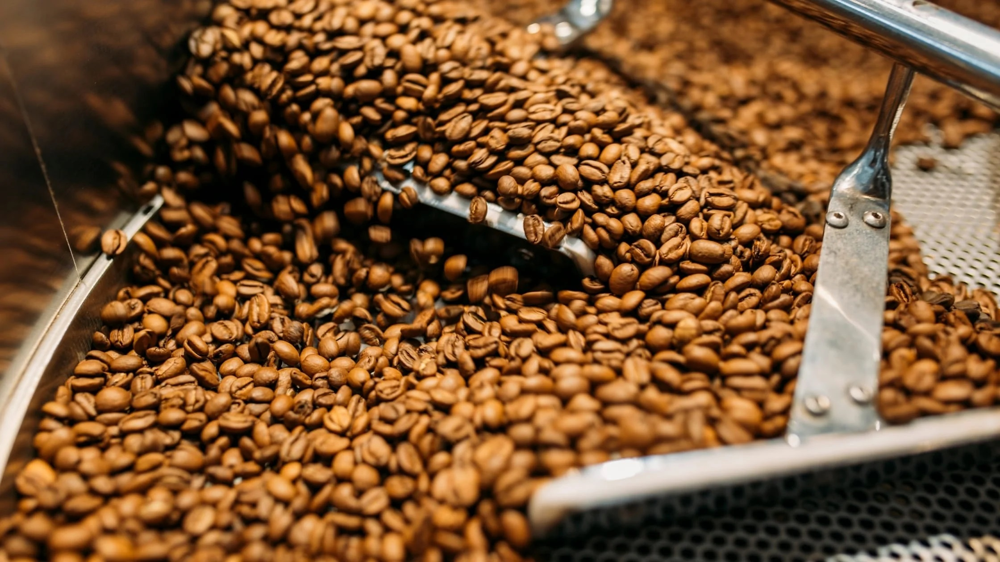
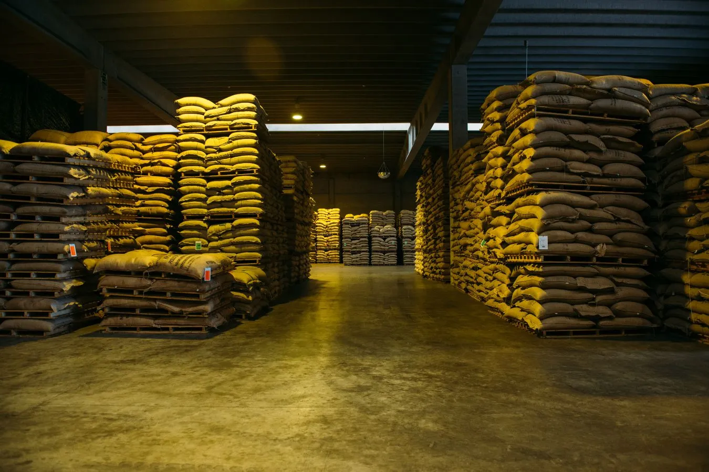
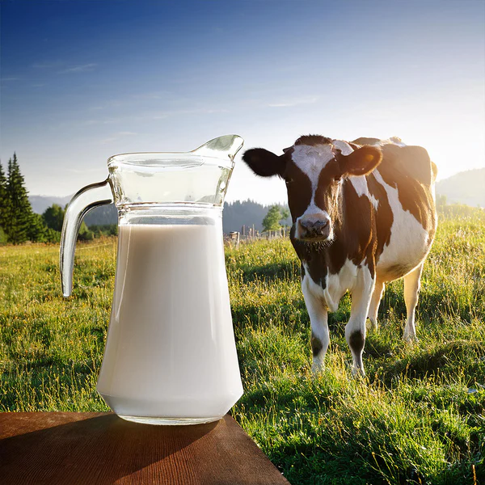

Two Crafts, One Standard
From bean to bag and pasture to pail — every batch of coffee and every litre of milk follows a disciplined, traceable process.
Coffee Parchment Processing
We process coffee parchment to strict quality standards — from sorting and drying to grading — preserving the unique aroma and flavor of Ugandan coffee.
See the process →Dairy Farming
Our dairy unit focuses on animal welfare, modern feeding and milk quality — best-practice herd management for nutritious, market-ready milk.
See the process →Parchment Processing, Step by Step
Careful handling at every stage protects flavor, aroma and export-grade quality.
1. Sourcing
Parchment coffee collected directly from partner farmers at fair, agreed prices.
2. Sorting & Grading
Beans sorted by size, density and quality to meet export-grade standards.
3. Controlled Drying
Careful drying preserves moisture content, flavor and aroma.
4. Storage & Export Prep
Graded coffee stored under proper conditions, ready for buyers.
Dairy Farming, Step by Step
Healthy herds and hygienic handling are the foundation of every litre we produce.
1. Herd Management
Healthy housing, veterinary care and attentive animal welfare.
2. Feeding & Nutrition
Balanced feeding programs supporting herd health and yield.
3. Milk Quality & Hygiene
Strict hygiene from milking to storage protects every litre.
4. Training Programs
Workshops equipping youth and women with livestock skills.
Frequently Asked

How Value Is Built
Our services are practical, hands-on operations. Coffee is handled for consistency and storage, while dairy is managed around animal care, hygiene and dependable output.
Protect the product at every critical stage.
Keep people, animals and facilities working to clear standards.
Prepare agricultural products for reliable buyers and partners.

Storage discipline
Fresh dairy